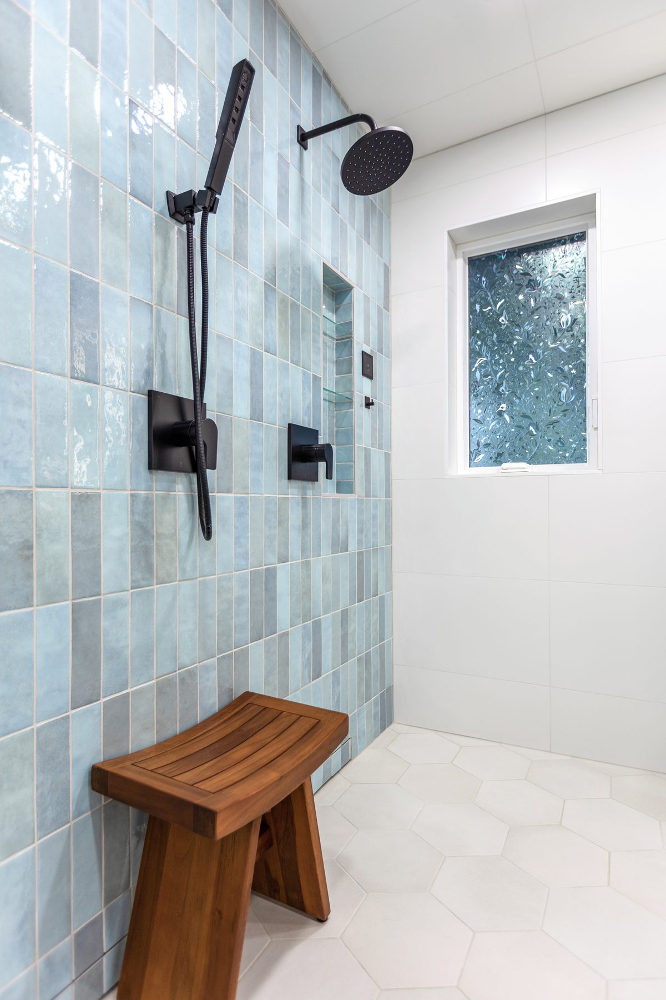

Recent Work
Walk-In Showers Projects
A look at recent walk-in showers work from DCB Construction in the Coeur d'Alene region.



Custom walk-in showers — frameless glass, bench seating, niche storage, and premium tile — built for Coeur d'Alene homes.
Walk-in showers have replaced the old tub-shower combo as the centerpiece of most modern bathroom remodels. They look better, they're easier to use as you get older, and they're a strong resale upgrade. DCB Construction LLC builds custom walk-in showers for Coeur d'Alene homeowners — frameless glass, low-curb or curbless entries, custom tile work, built-in benches, niche storage, and waterproof pan systems that actually last.
We work directly with you on the design — pan size and slope, tile selection, glass configuration, fixture choice — then we build it from the studs out. The mud-set pan and waterproofing layer are where most shower installations fail; we don't cut corners on either.
A look at recent walk-in showers work from DCB Construction in the Coeur d'Alene region.

CDA homeowners ask for walk-in showers for two reasons: lifestyle (the old tub gets used once a year) and longevity (a curbless entry now means no remodel needed when stairs get harder later). We've installed walk-ins in downtown CDA, Fernan Lake Village, Sanders Beach, the Hayden Lake side, and Riverstone — across a mix of historic cottages near downtown, mid-century ranches, and modern lakefront properties on Lake Coeur d'Alene.
Every home is different. Older CDA homes often need plumbing rerouted; newer builds may already have the rough-in but use builder-grade pans that won't survive long. We assess what's behind the wall before we quote.
Looking for other work in Coeur d'Alene? See: kitchen remodeling in Coeur d'Alene, bathroom remodeling in Coeur d'Alene, tile installation in Coeur d'Alene, or visit our Coeur d'Alene area page.
Walk-in showers in Coeur d'Alene typically run $7,000 to $20,000 depending on size, tile selection, and glass configuration. A standard 36x60 walk-in with porcelain tile and a semi-frameless door lands in the $9,000 to $12,000 range. Curbless entries with linear drains, custom benches, and full-height tile push the upper end. We provide detailed estimates so you can see exactly where the budget goes.
Yes. We handle permitting with the City of Coeur d'Alene Building Department on your behalf. Walk-in shower installs that involve relocating plumbing or removing structural elements typically require permits and inspections, and we coordinate everything so the project stays on schedule.
Most walk-in shower installations in CDA take 2 to 3 weeks from demolition to final glass installation. The pan and waterproofing alone need 24 to 48 hours of cure time, tile setting and grouting takes another several days, and the glass is typically the last step (custom glass orders run 7 to 10 days). We give you a clear day-by-day schedule before work starts.
Usually yes — but it depends on the subfloor. Curbless showers require the floor to be recessed so the shower pan sits flush with the surrounding floor. In older CDA homes built on a crawlspace or unfinished basement, that's straightforward. In slab-on-grade construction it's harder and may require a thicker tile installation outside the shower to compensate. We evaluate it at the consultation.